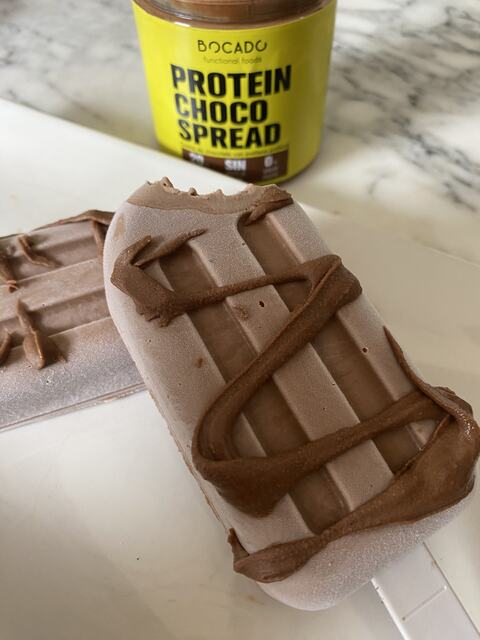

Recette · Dessert · 10 min environ
Glace protéinée au chocolat
Glace protéinée au chocolat : une idée très simple avec Protein Choco Spread pour un goûter ou un dessert, en 10 minutes environ. Elle contient : 200 g de cottage cheese.
2 ingrédients3 étapes10 min environ
Ingrédients
- 200 g de cottage cheese
- 200 g de Protein Choco Spread
Déclaration nutritionnelle28 g de protéines par glace, très pauvre en glucides
Préparation
- 01Mixer les deux ingrédients ensemble
- 02Verser dans des moules à glace
- 03Congeler